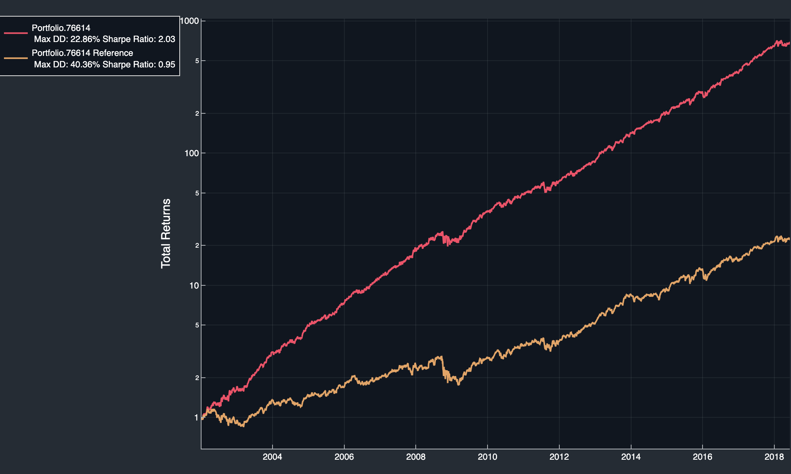
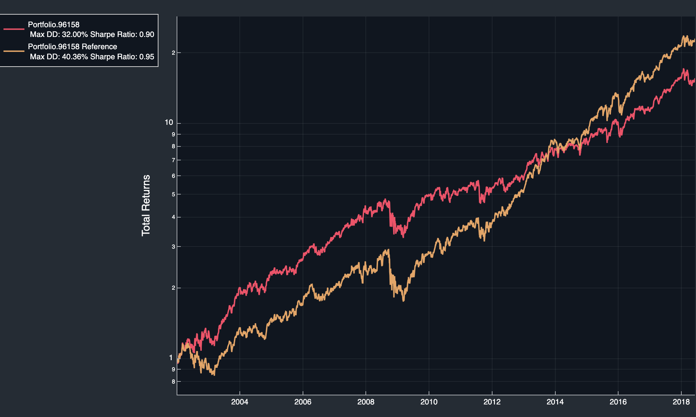

Tutorial - Backtesting
If you are completely new to TFire it is recommended to look at Tutorial - Basic Analysis of Time Series Data first.
Setting up Scoring
The decision of when to buy or sell an asset is done by Scoring the asset. To construct a Scoring we start with a slightly altered version of the setup from Tutorial - Basic Analysis of Time Series Data.
TFire> tickers = ["MMM", "AOS", "ABT", "ACN", "ATVI"];
TFire> eval_dates = dates_range(Date(2001,6,2), Date(2018,6,8));
TFire> constituents = constituents_continuous(tickers, eval_dates, 600);
TFire> spec = SpecificationCollection(constituents);
TFire> sfdb = setup_simple_fast_db(spec; read_disk=true, read_external=false, data_path = "Days/spx500_1d.jld2");
TFire> collection = setup_collection(spec, sfdb);Let's now cheat and filter out all all dates that have a return after 10 days larger than the average return after 10 days. First we find out what the average return is after 10 trading days
TFire> ret = compound_return(collection, 10;flat=true);
TFire> mean_return = mean(ret)
1.0078063862992992Here, we use the compound_return function to calculate the return after 10 days. flat=true is used to flatten the returned values into a vector. Finally, we use the mean function to get the average return after 10 days.
Now we can filter out the dates that have a return larger than the average return after 10 days. First let's create a function that returns true if a value is larger than the average return after 10 days.
TFire> function higher_than_average(x)
return x > 1.0078063862992992
endthen filter a copy of the original collection
TFire> collection_higher = copy_collection(collection);
TFire> cret = compound_return(collection, 10);
TFire> filter_collection!(collection_higher, cret, higher_than_average;action=:keep)We can compare the number of samples in the original collection and the filtered collectio and notice that as expected about half of the samples had a higher return than the average sample.
TFire> collection
-| Collection |- (Continuous)
Tickers: 5, MMM AOS ABT ACN ATVI
Samples: 21373
TFire> collection_higher
-| Collection |- (Continuous)
Tickers: 5, MMM AOS ABT ACN ATVI
Samples: 10759Now it's time to create the actual Scoring.
TFire> score_buy = ScoreBuy(collection_higher, 1.);This function creates a ScoreBuy where every date contained in collection_higher, i.e. all dates that have higher than average return after 10 days, gets a score of 1.
Setting up an Initial Portfolio
TFire> from_date = DateTime(2002,1,7)
TFire> port = initialize_portfolio(collection, from_date);Let's hold the assets for 10 days after they were bought.
TFire> score_hold = score_extend(score_buy, port; constant_ticks=10);This creates a ScoreHold object, which has a score of 1 for every date in ScoreBuy and 10 days forward.
Propagating the Portfolio
We can propagate the initial portfolio port using the score_hold to get a PortfolioHistory.
TFire> port_prop = propagate_portfolio(port, DateTime(2018,6,8), score_hold)
-| Portfolio History |- 4135 number of steps from 2002-01-07T00:00:00 to 2018-06-08T00:00:00Analysing the Results
To evaluate the performance of our portfolio, we begin by plotting it against a portfolio where the same stocks are bought for equal ammount at day 1 and then held to the final day, i.e. equal weighted buy and hold. We can get this portfolio by running reference_portfolio(port_prop).
TFire> plot_portfolio(port_prop, reference_portfolio(port_prop)) The cheating portfolio is of course significantly outperforming the buy and hold variant, with a 600x return vs 20x return over the time period.
We can add a trading fee of 1% on all trades and see what that does.
TFire> port_prop_fee = propagate_portfolio(port, DateTime(2018,6,8), score_hold; fee_type=:proportional, prop_fee=0.01)
TFire> plot_portfolio(port_prop_fee, reference_portfolio(port_prop_fee))
That concludes this tutorial on the basics of backtesting in TFire.